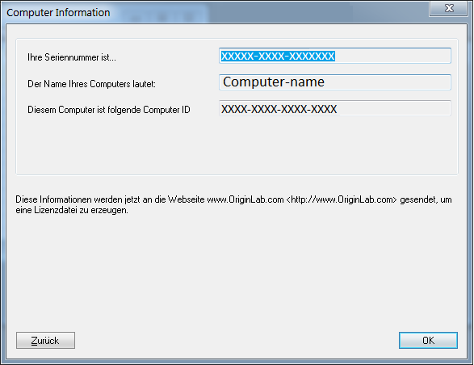

Rechnergebundene Gruppenlizenz (Node-Locked) für V2016 und älter
Multi-User-Node-Locked-Old-Lic
Sie haben eine rechnergebundene Gruppenlizenz (Node-Locked), wenn Ihre Seriennummer folgendermaßen aussieht:
xFxxx-9xxx-76xxxxx, or
xFxxx-6xxx-76xxxxx.
Sollte Ihre Seriennummer folgendermaßen aussehen:
xxxxx-2xxx-79xxxxx oder
xxxxx-3xxx-79xxxxx,
dann haben Sie eine Concurrent-Netzwerklizenz und die Informationen auf dieser Seite sind NICHT relevant für Sie.
Ein rechnergebundenes Netzwerklizenzpaket (Node-Locked) berechtigt Sie dazu, Origin auf einer Anzahl von Computern, basierend auf der von Ihnen erworbenen Lizenzanzahl, zu installieren bzw. zu verteilen. Jeder dieser Computer muss eine Lizenz von der OriginLab-Webseite erhalten. Die Lizenz ist rechnergebunden. Wenn Sie den Computer mit der Origin-Lizenz austauschen möchten, müssen Sie die Lizenz deaktivieren, bevor Sie eine neue Lizenz für den neuen Computer bekommen.
/Alert_icon.png) | Diese Lizenzanweisungen sind für 2016 und ältere Versionen. Das Lizenzsystem wurde ab Version 2017 aktualisiert. Wenn Sie Origin 2017 und höher verwenden, lesen Sie bitte die Anweisungen hier.
|
Administratortipps: Bevor Sie Origin an Ihre Anwender verteilen...
Für rechnergebundene Gruppenlizenzen (Node-Locked) bietet OriginLab einen Kontrollmechanismus, welche Web-Mitgliedschaftskonten von OriginLab eine Lizenz für die Software erhalten können, die mit Ihrer Seriennummer installiert ist. Dieser Mechanismus soll die unautorisierte Nutzung Ihrer Seriennummer verhindern und sicherstellen, dass alle von Ihrer Organisation gekauften Lizenzen den autorisierten Mitgliedern Ihrer Organisation zur Verfügung stehen.
Lizenzzugriffsbeschränkungen auf der OriginLab-Webseite einrichten
Als Origin-Administrator befolgen Sie bitte die folgenden Schritte, um Ihre Seriennummer zu registrieren und die Beschränkungen des Lizenzzugriffs für Ihre Seriennummer einzurichten. Bitte schließen Sie diesen Vorgang ab, bevor Sie Ihre Benutzer darüber benachrichtigen, dass die Origin-Software für sie verfügbar ist.
/Video_Image_2016.png) Sehen Sie sich das Video-Tutorial an - Erste Schritte mit der rechnergebundenen Gruppenlizenz (Node-Locked)
Sehen Sie sich das Video-Tutorial an - Erste Schritte mit der rechnergebundenen Gruppenlizenz (Node-Locked)
- Halten Sie Ihre Seriennummer und den zugehörigen Zugangscode griffbereit. Sie finden diese auf Ihrem Lizenzzertifikat sowie auf der Hülle der Origin-DVD und innen auf dem Deckblatt des Handbuchs.
- Gehen Sie zur Seite http://www.originlab.com/.
- Klicken Sie auf den Link "Origin lizenzieren/registrieren" im Menü Support.
- Melden Sie sich an, wenn Sie bereits über ein Konto zur Web-Mitgliedschaft verfügen, oder erstellen Sie sich ggf. ein Konto.
- Wenn Sie zuvor bereits eine Seriennummer registriert haben, wird Ihnen die Webseite Ihrer Produktregistrierung angezeigt. In diesem Fall klicken Sie auf die Schaltfläche Neue Seriennummer registrieren.
- Aktivieren Sie die Option "Ich möchte meine Origin-Software registrieren" und klicken Sie auf Weiter.
- Geben Sie Ihre Version ein und wählen Sie bzw. geben Sie Ihre Seriennummer ein. Klicken Sie auf Weiter.
- Sie sehen jetzt eine Seite, auf der Sie gebeten werden, den Zugangscode (Access Code) einzugeben und eine E-Mail-Adresse oder ein E-Mail-Fragment. Nach diesem Schritt können Sie zusätzliche E-Mail-Adressen oder E-Mail-Fragmente je nach Bedarf eingeben (siehe Schritt 9 unten).
- Wenn Sie die einzige Person sein wollen, die Lizenzen für Ihre Seriennummer abrufen kann, geben Sie Ihre vollständige E-Mail-Adresse ein, d.h. die E-Mail-Adresse, die in Ihrem Konto hinterlegt ist.
- Wenn Sie einzelnen Personen erlauben möchten, Lizenzen für Ihre Seriennummer abzurufen, geben Sie Ihre vollständige E-Mail-Adresse ein, d.h. die E-Mail-Adresse, die in Ihrem Konto hinterlegt ist. Nachdem dieser Schritt beendet ist, können Sie zusätzliche vollständige E-Mail-Adressen für von Ihnen zugelassene Anwender hinzufügen (siehe den folgenden Schritt). Sie können jederzeit zur OriginLab-Webseite zurückkehren, um diese E-Mail-Adressen hinzuzufügen, vorausgesetzt, dass Sie die E-Mail-Adresse des Anwenders hinzufügen, bevor dieser versucht, eine Lizenz abzurufen.
- Wenn Sie den Lizenzzugriff auf die Mitglieder Ihrer Organisation beschränken möchten, geben Sie ein Fragment der E-Mail-Adresse ein, das für Ihre Organisation eindeutig ist.
- Um zusätzliche E-Mail-Adressen bzw. E-Mail-Fragmente einzugeben, nachdem Sie erfolgreich die/das erste eingegeben haben,
- klicken Sie auf Ihren Benutzernamen, der sich oben rechts von der OriginLab-Webseite befindet (oder melden Sie sich an, wenn Sie zu der Webseite zurückkehren und noch nicht angemeldet sind).
- Klicken Sie dann auf Ihrer "Willkommens"-Webseite auf den Link für die Beschränkungen des Lizenzzugriffs.
- Befolgen Sie die Anweisungen auf der Seite, die aufgerufen wird, um zusätzliche E-Mail-Adressen bzw. -Fragmente hinzuzufügen.
| Hinweis: Sie sind berechtigt, für Ihr Origin ein Upgrade auf die neueste Version während der Laufzeit der Softwarepflege durchzuführen. Es wird empfohlen, dass Sie als Origin-Administrator gleich nach dem Release die neue Version registrieren und die Lizenzzugriffsbeschränkungen einrichten. Sobald Sie dies getan haben, können Sie sie jederzeit an Ihre Benutzer verteilen.
|
Anweisungen zum Bereitstellen des Origin-Lizenzpakets für Ihre Anwender
Wenn Sie die Origin an Ihre Benutzer verteilen, müssen Sie zusätzlich zu dem Installationsprogramm und zu der Seriennummer auch den Zugangscode zur Verfügung stellen, da dieser während des Lizenzabrufs eingegeben werden muss. Sie müssen den Anwendern außerdem mitteilen, dass Sie sich während des Lizenzabrufs auf der OriginLab-Webseite anmelden bzw. ein Konto für die OriginLab-Webseite erstellen müssen, sollten sie noch über keines verfügen. Informieren Sie die Anwender darüber, dass sie die Kontaktdaten Ihrer Organisation, einschließlich E-Mail-Adresse, eingeben sollten, wenn Sie sich auf der OriginLab-Webseite registrieren.
Wenn sie bereits ein Konto haben, dies aber nicht die E-Mail-Adresse der Organisation enthält (beispielsweise eine gmail-Adresse verwendet wurde), sagen Sie ihnen, dass sie zuerst ihr Konto mit den Organisationsdaten aktualisieren müssen. Sie müssen diese Informationen aktualisieren, indem Sie sich bei der Webseite anmelden und auf den Link Meine Profildetails anzeigen/aktualisieren klicken.
Softwareverteilung für mehrere Anwender
Es gibt viele Möglichkeiten, Origin an Anwender zu verteilen.
Lizenzaktivierung für rechnergebundene Gruppenlizenzen (Node-Locked)
Wichtige Hinweise!
- Um den Lizenzprozess einer Node-Locked-Lizenz abzuschließen, müssen Sie an dem Computer angemeldet sein, der ein Konto mit Administratorrechten hat.
- Wenn das Betriebssystem Windows 10, 8.1, 8, 7 oder Vista ist, müssen Sie mit der rechten Maustaste auf das Origin-Programmsymbol klicken und die Option Als Administrator ausführen auswählen.
- Sobald der Lizenzprozess abgeschlossen ist, wird die Lizenz auf diesem Computer gespeichert. Ein Internetzugang ist danach nicht mehr erforderlich.
Falls Ihr Computer Internetzugriff hat
Sehen Sie das Video-Tutorial an - Rechnergebundenes Origin (Node-Locked) auf einem Computer mit Internetzugriff lizenzieren
- Starten Sie Origin. Es wird ein Lizenzierungsdialog geöffnet, der Optionen zum Anfordern Ihrer Lizenz enthält.
- Wählen Sie die erste Option Jetzt eine Lizenzdatei online anfordern. Dieser Computer hat Internetzugriff. Klicken Sie dann auf OK.
- Ein Dialog Computerinformationen wird geöffnet und zeigt Ihre Computerdetails, die an die OriginLab-Webseite weitergegeben werden. Klicken Sie auf OK.
- 
- Ihr Webbrowser wird auf einer Anmeldungsseite der OriginLab-Webseite geöffnet. Melden Sie sich an, wenn Sie bereits über ein Konto verfügen, oder erstellen Sie sich ggf. ein Konto.
- Nachdem Sie sich angemeldet haben, werden Sie gebeten, Ihren Zugangscode (Access Code) einzugeben. Wenn Sie Ihren Zugangscode nicht kennen, wenden Sie sich an Ihren Origin-Administrator. Klicken Sie auf Weiter.
/Secondary_User_Access_Code2.png)
- Ihre Lizenz wird erzeugt und auf der Webseite angezeigt. Kopieren Sie den gesamten Lizenztext in das Textfeld.
- Gehen Sie jetzt zurück zu Origin und fügen Sie den Lizenztext in den Dialog Lizenz eingeben ein. Klicken Sie auf OK.
Falls Ihr Computer keinen Internetzugriff hat
Sehen Sie das Video-Tutorial an - Rechnergebundenes Origin (Node-Locked) auf einem Computer ohne Internetzugriff lizenzieren
Wenn Ihr Computer keinen Internetzugriff hat, benötigen Sie Zugriff auf einen anderen Computer, der Zugang zum Internet besitzt. Sie können eine Lizenz über den Computer mit Internetzugriff abrufen. Dazu benötigen Sie die ID des Origin-Computers, den Authorization Code (Autorisierungscode) und die Origin-Seriennummer des Computers ohne Internetzugang.
- Wählen Sie in Origins Lizenzdialog die Option "Jetzt eine Lizenzdatei anfordern. Dieser Computer hat keinen Internetzugang." Klicken Sie auf OK.
/GetStarted3.png)
- Der Dialog, der geöffnet wird, zeigt Origin-Seriennummer, Computername, Computer-ID und Authorization Code an. Klicken Sie auf Dump to Notepad, um diese Informationen als .txt-Datei zu speichern oder sie zu notieren, um die Lizenz zu erhalten.
/Computer_details.png)
- Gehen Sie zu einem Computer mit Internetzugang und öffnen Sie einen Webbrowser auf der Seite www.originlab.com.
- Klicken Sie auf den Link "Origin lizenzieren/registrieren" im Menü Support.
- Melden Sie sich an, wenn Sie bereits über ein Konto verfügen, oder erstellen Sie sich ggf. ein Konto.
- Wenn Sie zum ersten Mal Origin über Ihr Konto registrieren oder lizenzieren:
- Auf der Seite, die sich öffnet, nachdem Sie sich angemeldet haben, aktivieren Sie die Option "Ich möchte meine Origin-Software registrieren und eine Lizenzdatei für einen Computer anfordern." und klicken auf Weiter.
- Geben Sie Ihre Seriennummer und Version ein bzw. wählen Sie sie aus und klicken Sie auf Fortfahren.
- Als Nächstes werden Sie gebeten, Ihren Zugangscode (Access Code) einzugeben. Wenn Sie Ihren Zugangscode nicht kennen, wenden Sie sich an Ihren Origin-Administrator.
- Geben Sie als Nächstes die ID des Origin-Computers, den Computernamen und den Authorization Code ein und klicken Sie auf Senden.
- Ihre Lizenz wird erzeugt und auf der Webseite angezeigt. Kopieren Sie den gesamten Lizenztext, der im Textfeld angezeigt wird.
- Öffnen Sie einen Texteditor wie Notepad und fügen Sie die Lizenz in Notepad ein. Speichern Sie diese Textdatei auf einem USB-Stick oder einer CD.
- Gehen Sie jetzt zu Ihrem Origin-Computer zurück. Sie müssen zum Hauptlizenzdialog zurückkehren, d.h., wenn Sie noch den Lizenzdialog mit Ihren Computerdetails angezeigt bekommen, klicken Sie auf die Schaltfläche Zurück.
- Wählen Sie im Hauptlizenzdialog "Ich halte meine Lizenzdatei bzw. meinen Lizenztext bereit. Was ist der nächste Schritt?" und klicken Sie auf OK.
- Kopieren Sie den Lizenztext und fügen Sie ihn in den Dialog Lizenz eingeben ein. Klicken Sie auf OK.
Wenn Sie Origin zuvor über Ihr Konto registriert bzw. lizenziert haben: Nachdem Sie sich angemeldet haben, sehen Sie die Webseite Ihrer Origin-Produktregistrierung.
- Um ein Lizenz für eine neue Seriennummer zu erhalten, die nicht in Ihrer Lizenztabelle gezeigt wird:
- Klicken Sie auf die Schaltfläche "Neue Seriennummer registrieren".
- Wählen Sie "Ich möchte meine Origin-Software registrieren und eine Lizenzdatei für einen Computer anfordern" und klicken Sie auf Weiter.
- Geben Sie Ihre Seriennummer und Version ein bzw. wählen Sie sie aus und klicken Sie auf Fortfahren.
- Fahren Sie mit Schritt 3 aus dem vorherigen Abschnitt fort.
- Um eine Lizenz für eine neue Version abzurufen, die nicht in Ihrer Lizenztabelle gezeigt wird, zum Beispiel für einen Upgrade-Benutzer, der seine neue Version lizenzieren möchte:
- Klicken Sie auf die Schaltfläche "Neue Seriennummer registrieren".
- Wählen Sie "Ich möchte meine Origin-Software registrieren und eine Lizenzdatei für einen Computer anfordern" und klicken Sie auf Weiter.
- Geben Sie Ihre Seriennummer und Version ein bzw. wählen Sie sie aus und klicken Sie auf Fortfahren.
- Fahren Sie mit Schritt 3 aus dem vorherigen Abschnitt fort.
- Um ein Lizenz für eine Seriennummer oder Version zu erhalten, die bereits in Ihrer Lizenztabelle gezeigt wird:
- Klicken Sie auf den Link der Seriennummer (für diese Version) in der Tabelle.
- Klicken Sie auf der aufgerufenen Seite des Lizenzabrufverlaufs auf die Schaltfläche "Eine Lizenz für einen neuen Computer anfordern", die sich oberhalb der Tabelle mit den Lizenzdetails befindet.
- Fahren Sie mit Schritt 4 aus dem vorherigen Abschnitt fort.
Abruf einer Lizenz für den Computer eines Benutzers durch den Origin-Administrator
Wenn Sie der Administrator für ein rechnergebundenes Gruppenlizenzpaket (Node-Locked) sind, können Sie einrichten, dass Anwender ihre eigenen Origin-Lizenzen abrufen. Alternativ übernehmen Sie den gesamten Lizenzierungsprozess. Wenn Sie sich dafür entscheiden, die Lizenzierung zu übernehmen, können Sie Origins Lizenzdialog auf dem Computer des Anwenders dazu verwenden, die Lizenz abzurufen. Optional können Sie die erforderlichen Computerdetails in Erfahrung bringen und die Lizenz über einen anderen Computer anfordern. In beiden Fällen sollten Sie den obigen Anweisungen folgen.
Weiteres
FAQ
- Wenn ich versuche, eine Lizenz anzufordern, werde ich nach einem Zugangscode gefragt. Was ist das und warum sehe ich diese Meldung?
- Wenn ich versuche, eine Lizenz anzufordern, wird mir eine Meldung angezeigt, dass ein Upgrade für die Lizenz durchgeführt wurde und dass keine Lizenzen für ältere Versionen mehr verfügbar sind. Warum?
- Wenn ich versuche, eine Lizenz anzufordern, wird mir eine Meldung angezeigt, dass ich keinen Zugriff auf die Lizenz habe. Warum wird diese Meldung angezeigt und was kann ich tun, um dies zu lösen?
- Warum kann ich keinen Text in den Lizenzierungsdialog einfügen?
- Muss ich meine alte Versionslizenz deaktivieren, bevor ich meine neue Version starte?
- Wenn ich "Mein Computer hat Internetzugriff" auswähle, öffnet sich nur das Fenster, in das ich die Lizenz einfügen soll, oder es öffnet sich ein anderes Programm als mein Webbrowser. Wo liegt der Fehler?
- Wenn ich meine Lizenz in Origin einfüge, wird mir "Die Aktivierungszeit ist abgelaufen." angezeigt. Warum?
Lizenzdeaktivierung für rechnergebundene Gruppenlizenzen (Node-Locked)
Wenn Sie planen, Ihre lizenzierte Origin-Software auf einen anderen Computer zu übertragen, müssen Sie sie auf dem ursprünglichen Computer deaktivieren und dann eine neue Lizenz für den neuen Computer abrufen. Wenn Sie keinen Zugriff auf den ursprünglichen Computer haben, können Sie ein Antragsformular für eine Systemübertragung auf der Webseite von OriginLab ausfüllen.
Falls Origin weiterhin auf Ihrem alten Computer ausgeführt werden kann
Sehen Sie sich das Video-Tutorial an - Eine rechnergebundene Lizenz (Node-Locked) deaktivieren
Falls Ihr Computer Internetzugriff hat
- Melden Sie sich bei Windows an einem Administrator-Konto an.
- Starten Sie Origin als ein Administrator, indem Sie mit der rechten Maustaste auf das Origin-Symbol klicken und "Als Administrator ausführen" auswählen.
- Wählen Sie Hilfe: Lizenz deaktivieren.
- Wählen Sie Online in Schritt 1 und klicken Sie auf Jetzt verbinden.
- Sie werden zur OriginLab-Webseite weitergeleitet. Melden Sie sich an und klicken Sie auf Deaktivierungscode anfordern (DC).
- Kopieren Sie den Deaktivierungscode und fügen Sie den Code in Schritt 2 in Origin ein.
- Klicken Sie auf die Schaltfläche Deaktivieren in Origin. Dies deaktiviert Origin auf Ihrem Computer. Außerdem wird die Information an die OriginLab-Webseite gesendet und eine Lizenz für Sie freigegeben.
Falls Ihr Computer keinen Internetzugriff hat
- Öffnen Sie Origin (wenn Sie es auf Windows Vista oder Windows 7 ausführen, klicken Sie mit der rechten Maustaste auf das Origin-Programmsymbol und wählen Sie "Als Administrator ausführen").
- Klicken Sie auf das Menü Hilfe und wählen Sie Lizenz deaktivieren.
- Wählen Sie Offline in Schritt 1.
- Öffnen Sie auf einem Computer mit Internetzugriff die Seite http://www.originlab.com/reginfo und melden Sie sich an.
- Klicken Sie auf die Seriennummer, die Sie deaktivieren, um festzustellen, für welche Computer Sie Lizenzen abgerufen haben.
- Klicken Sie auf den entsprechenden Link Lizenz deaktivieren oder Lizenz übertragen und befolgen Sie dann die Schritte zum Abrufen eines Deaktivierungscodes (DC).
- Notieren Sie sich den Deaktivierungscode und kehren Sie zu dem Computer ohne Internetzugriff zurück. Geben Sie den Code in Origin ein, um eine Deaktivierungsbestätigungsnummer (DCN) zu erzeugen.
- Notieren Sie sich diese DCN und gehen Sie zurück zur Webseite Lizenz deaktivieren aus dem vorherigen Schritt. Geben Sie die DCN in Schritt 3 dieser Seite ein.
Wenn Sie eine Erfolgsmeldung bekommen, ist eine Lizenz für die Wiederverwendung freigegeben. Wenn Sie die DCN nicht wieder auf der OriginLab-Webseite eingeben, wird keine Lizenz freigegeben.
Falls Ihr lizenzierter Origin-Computer nicht länger verfügbar ist
Sie müssen ein Antragsformular für eine Systemübertragung auf der Webseite von OriginLab ausfüllen.
- Öffnen Sie http://www.originlab.com/reginfo und melden Sie sich an.
- Klicken Sie auf die Seriennummer, die Sie deaktivieren, um festzustellen, für welche Computer Sie Lizenzen abgerufen haben.
- Klicken Sie auf den entsprechenden Link, entweder "Lizenz deaktivieren" oder "Lizenz übertragen".
- Klicken Sie im Hinweis unter Schritt 3 auf den Link Eine Lizenzübertragung anfordern und senden Sie das Formular.
FAQ
Ihre rechnergebundene Gruppenlizenz (Node-Locked) nach der Verlängerung der Softwarepflege aktualisieren
Nachdem Ihre Softwarepflege verlängert wurde, befolgen Sie die folgenden Schritte, um eine aktualisierte Lizenz zu erhalten.
- Melden Sie sich an Ihrem Computer mit einem Konto an, das über Administratorrechte verfügt.
- Starten Sie Origin als ein Administrator, indem Sie mit der rechten Maustaste auf das Origin-Symbol klicken und Als Administrator ausführen auswählen.
- Wählen Sie Hilfe: Über Origin.
- Klicken Sie im Dialog Über Origin auf die Schaltfläche Lizenz.
- Klicken Sie im Dialog Lizenzstatus auf die Schaltfläche Lizenz.
- Fahren Sie dann im Hauptdialog der Lizenzierung damit fort, eine neue Lizenzdatei anzufragen, wie Sie das auch zuvor bei der Lizenzaktivierung getan haben.
- Nachdem Sie eine neue Lizenz von der OriginLab-Webseite erhalten haben, fügen Sie den Lizenztext in den Dialog Lizenz eingeben ein, um den Vorgang abzuschließen. Wählen Sie Hilfe: Über Origin, um zu prüfen, ob das aktualisierte Ablaufdatum der Softwarepflege korrekt ist.
| Hinweis: Wir empfehlen stets, für Ihr Origin ein Upgrade auf die neueste Version während der Laufzeit der Softwarepflege durchzuführen. Wenn Sie der Origin-Administrator des Gruppenlizenzpakets sind, legen wir Ihnen nah, die neue Version nach dem Release zu registrieren und an die Anwender zu einem für Sie passenden Zeitpunkt zu verteilen.
|